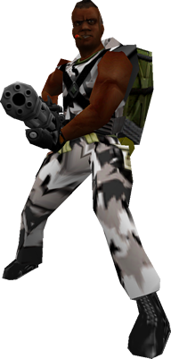

Allies
Full listing of all the allied characters you will encounter (and use to help you) throughout your adventures:
Contents
- Players
- Interaction
- Characters
- Anything can be an ally
Players
|
Your team mates in Sven Co-op (other players attempting the same mission) will commonly look similar to the figure on the right, though there are many character models to choose from. All players have exactly the same abilities as you, and can fight just as hard.
It is essential that you co-operate with your team mates, as most Sven Co-op levels are a lot harder than the original Half-Life missions with stronger enemies and more combat. You may also need to work with your team mates to solve puzzles or to activate certain buttons.
Communication with others helps ensure success, so before you play check your key setting for the Chat Message command (default Y) - better yet, if you have a microphone handy, use the control options menu to set a key for Use Voice Communication and hold the key in game to talk to team mates. Remember to use voice communication in respect of other players hearing!
 You cannot hurt or kill your team mates. Consider any attempt to do so as a waste of ammunition. You cannot hurt or kill your team mates. Consider any attempt to do so as a waste of ammunition.- Some maps require a player to be boosted up to a higher ledge. This is where one player will crouch down by the higher platform allowing another player to jump on top to reach the higher area. It helps if players are kind and offer to boost others when required.
- To help with boosting, some maps enable a new feature called auto climbing. This is done by jumping against a wall of a higher area, and depending on the height of the area, you can boost yourself up on top of it.
Some players will have icons beside them on the score board. This denotes players who are donors or members of the Sven Co-op team as follows:
 Donor ($5+) with electric crowbar extra. Donor ($5+) with electric crowbar extra.- Donor ($8+) with electric crowbar and gold Uzi extras.
 Donor ($20+) with electric crowbar and gold Uzi extras. Donor ($20+) with electric crowbar and gold Uzi extras.- Game contributor / internal tester.
- Game artist (maps, models, sounds, etc)
 Game developer / co-ordinator. Game developer / co-ordinator.
On the far right of the score board you may find players with the server administrator icon , which means this person helps run and maintain the game server you're playing on. They are your first point of contact if you are having any trouble while playing on their game server. This icon may be tinted gold to signify that the person owns the game server.
|
|
Back to the top...
Interaction
In order to help your team complete missions effectively with allied characters, there are a set of commands you can use (and bind to a key) to interact with the allied characters around.
All allied characters will follow the players in the same way scientists or Barney does in regular Half-Life. Simply use them once to make them follow you, then use them again to make them stay where they are.
All allies that are following you can now be given simple commands. You can set keys to these commands in the control options.
| Command |
Description |
Recommended key |
| npc_attackmytarget |
Your followers will attack the enemy currently in your cross-hair. |
V |
| npc_findcover |
Your followers will look for a good covering position. -- This is automatically done when you use the grenade warning command, so you won't need to configure this. |
X |
| npc_return |
Your followers will immediately return to your position. |
C |
| npc_moveto |
Your followers will immediately walk to the location you're aiming at. You'll see a spark to confirm where you're sending them to. |
, (comma) |
| medic |
A near by medic will come to heal you. You'll also alert other players that you're asking for medication. |
Z |
| grenade |
Alerts other players that they should take cover. This will automatically perform the npc_findcover command too. |
X |
There are some combinations you can set on these keys for better interaction, for example:
- bind X "grenade; say_team Look out!"
- bind Z "medic; npc_return; say_team Medic please."
- Friendly opposing force grunts are dressed in jungle camouflage, and hostile opposing force grunts are dressed in the standard white urban camouflage. While this is different from opposing force, this is necessary to keep the same style as the standard grunts in Sven Co-op. Just remember, green is good, white is bad.
- Players caught by Barnacles will not be able to call for aid. Other players will only hear a struggle.
Back to the top...
Characters
Scientist
- Class: Human passive
- Weapons: None
- Special abilities: Can heal and revive other allies
- Role: Healing players, creating catastrophes
- Scientists are often required to unlock a specialist area for your team to proceed. Ensure you keep them alive.
- Scientists are all medically trained. If you use a scientist and your health is low, he will heal you.
|
|
Barney
- Class: Player ally
- Weapons: 9mm pistol
- Special abilities: None
- Role: Defense
- Security guards are often required to unlock an area for your team to proceed. Ensure you keep them alive.
|
|
Otis
- Class: Player ally
- Weapons: Desert eagle
- Special abilities: None
- Role: Defense
- Security guards are often required to unlock an area for your team to proceed. Ensure you keep them alive.
|
|
Grunt
- Class: Player ally
- Weapons: MP5; M16 with grenade launcher; Shotgun; SAW; RPG; Hand grenades; Kicking
- Special abilities: Can call for a medic grunt for healing
- Role: Attack
- Grunts have various weapon load-outs and will work in squads effectively.
- Grunts can be very helpful in dangerous combat. Get them to follow you and help you fight.
|
 |
Medic grunt
- Class: Player ally
- Weapons: 9mm pistol; Desert eagle
- Special abilities: Can call for a medic grunt for healing, can heal and revive other grunts
- Role: Support
- The role of the Medic is to keep the squad alive. Ensure that you also keep him alive with your medkit.
- Medics will attack near by enemies, but will immediately run to an ally calling for medical attention. Medication supply is unlimited.
|
 |
Torch grunt (aka Engineer)
- Class: Player ally
- Weapons: Desert eagle
- Special abilities: Can call for a medic grunt for healing, can open doors with a blowtorch
- Role: Support
- Torch grunts will attack near by enemies, but will immediately perform their objectives when close to them. Try to keep them away from combat.
- Use the npc_return command (or bind it to a key) to force a torch grunt to stop fighting and following you to return to your position. This is useful when you need him to complete an objective.
- The Torch Grunt carries a canister of pressurized gas, which is highly flammable. If hit by an enemy, it can severely impact your squad.
|
 |
Heavy weapons grunt
- Class: Player ally
- Weapons: Microgun
- Special abilities: Can call for a medic grunt for healing
- Role: Attack
- The heavy weapons grunt is incredibly powerful. Get them to follow you and help you fight.
- The heavy weapons grunt will drop his microgun upon death, which can be picked up and used by players.
|
 |
Back to the top...
Anything can be an ally...
...if the mapper decides so. All monsters shown on the enemies listing can also be configured as an ally if the mapper decides so.
When you aim at a monster you are shown its details on the left, and told if it's an ally or enemy. Remember not to kill allies as they are often required to progress through the map.
Back to the top...